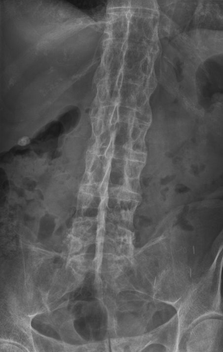

Ficha del catálogo
Espondilitis anquilosante
- Sistema
- Óseo
- Modalidad
- RX
- Región
- Columna y sacroilíacas
- Dificultad
- Avanzado
Espondiloartritis inflamatoria crónica que comienza en las articulaciones sacroilíacas y asciende por la columna produciendo anquilosis progresiva. Afecta sobre todo a varones jóvenes y cursa con dolor lumbar inflamatorio de predominio nocturno con rigidez matutina prolongada. El resultado final es una columna rígida y frágil.
Técnica
Radiografía anteroposterior de pelvis centrada en sacroilíacas y estudio de columna en dos proyecciones. La resonancia detecta la inflamación activa antes de que aparezcan cambios estructurales.
Qué observar
- Sacroileítis bilateral y simétrica con borrosidad, erosiones y esclerosis
- Fusión final de las articulaciones sacroilíacas con desaparición del espacio
- Sindesmofitos verticales y finos que unen cuerpos vertebrales contiguos
- Cuadratura de los cuerpos vertebrales por erosión de sus ángulos anteriores
- Aspecto de columna en caña de bambú en la enfermedad avanzada
- Edema óseo en los ángulos vertebrales en resonancia como signo de actividad
Hallazgos
Sacroileítis bilateral simétrica con esclerosis y fusión, junto a sindesmofitos verticales y osificación ligamentaria que rigidiza la columna.
Perlas
La columna anquilosada se comporta como un hueso largo: Un traumatismo leve puede producir una fractura transversal inestable con alto riesgo neurológico. Ante cualquier trauma en estos pacientes se hace estudio seccional, nunca solo radiografía.
Diagnóstico diferencial
- Hiperostosis esquelética idiopática difusa
- Osificaciones gruesas y fluidas con sacroilíacas y espacios discales conservados.
- Artritis psoriásica axial
- Sacroileítis asimétrica y sindesmofitos gruesos y no marginales.
- Osteítis condensante del ilion
- Esclerosis triangular en el lado ilíaco sin erosiones.
Simuladores
- Cambios degenerativos de sacroilíacas
- Sacroileítis infecciosa unilateral
- Osteoartrosis del raquis
Por modalidad
- RX
- Documenta el daño estructural establecido
- RM
- Detecta sacroileítis activa antes de los cambios radiográficos
- TC
- Define erosiones y anquilosis con detalle óseo
Protocolo
Radiografía de pelvis y columna. Resonancia de sacroilíacas con secuencias sensibles al líquido en planos oblicuos coronal y axial.
Clasificación
La sacroileítis radiográfica se gradúa desde cambios dudosos hasta la anquilosis completa, y la bilateralidad avanzada forma parte de los criterios diagnósticos clásicos.
Errores frecuentes
- Confundir sindesmofitos finos con los osteofitos gruesos de la hiperostosis difusa
- Solicitar solo radiografía en el paciente joven con dolor inflamatorio reciente
- No sospechar fractura vertebral tras trauma menor en columna anquilosada

espondilitis sacroileitis sindesmofito caña de bambu espondiloartritis columna anquilosis